CMSC424: Query Processing — Parallel and Distributed Architectures
Instructor: Amol Deshpande
1. Why Parallelism?
For most of database history, the default computing model was a single machine: one CPU, one memory, one disk. Performance was improved by making that single machine faster — bigger processors, faster disks, more memory. This is called scaling up (or vertical scaling). It is what produced the supercomputers of the 1980s (Cray, IBM mainframes): extraordinarily powerful single machines, custom-built and extraordinarily expensive.
The problem is that scaling up hits a wall. There are hard physical limits to how much computing power can be packed into a single machine, and the cost of approaching those limits grows super-linearly. Beyond a certain point, it is far more cost-effective to scale out (horizontal scaling): use many commodity machines working together rather than one massive custom machine.
Today, all major data-intensive systems are built on this model. Apache Spark, Snowflake, Amazon Redshift, Google BigQuery, and virtually every other modern data warehouse or analytics platform execute queries across dozens to hundreds of thousands of machines. Even PostgreSQL and MySQL — traditionally single-node systems — are gradually adding parallel query execution features, though their core architectures remain single-machine.
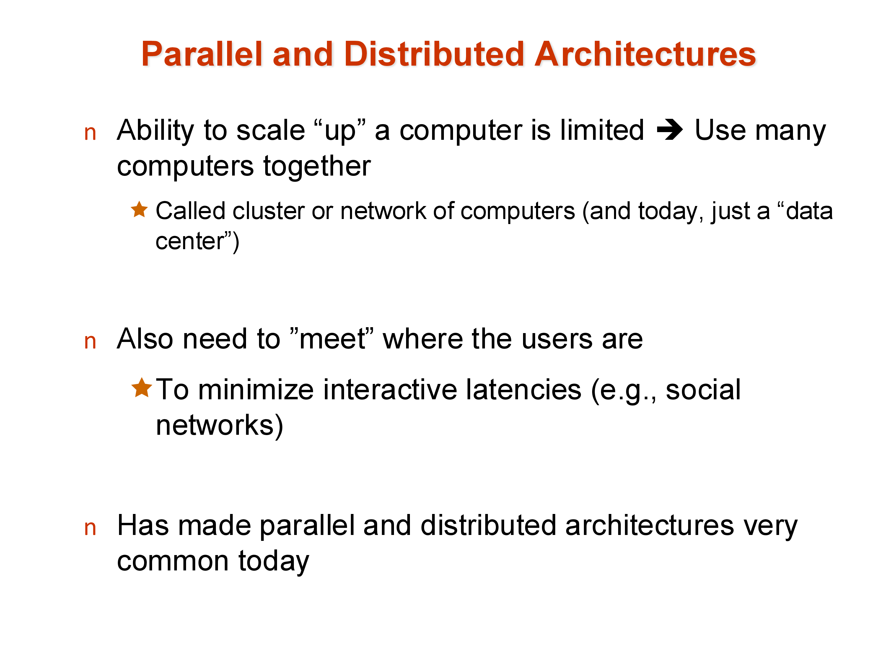
A second reason for distributed systems is geographic reach: large internet services (social networks, e-commerce, streaming platforms) have users all over the world. To minimize interactive latency, data must be replicated near users. A user in Mumbai should not need to wait for a round-trip to a data center in Virginia. This geographic distribution is done out of necessity, not for performance — placing all machines in one data center would be cheaper and simpler.
2. Parallel Architectures
There are three classical models for how multiple processors can share computational resources, and a fourth hybrid that most real systems approximate.
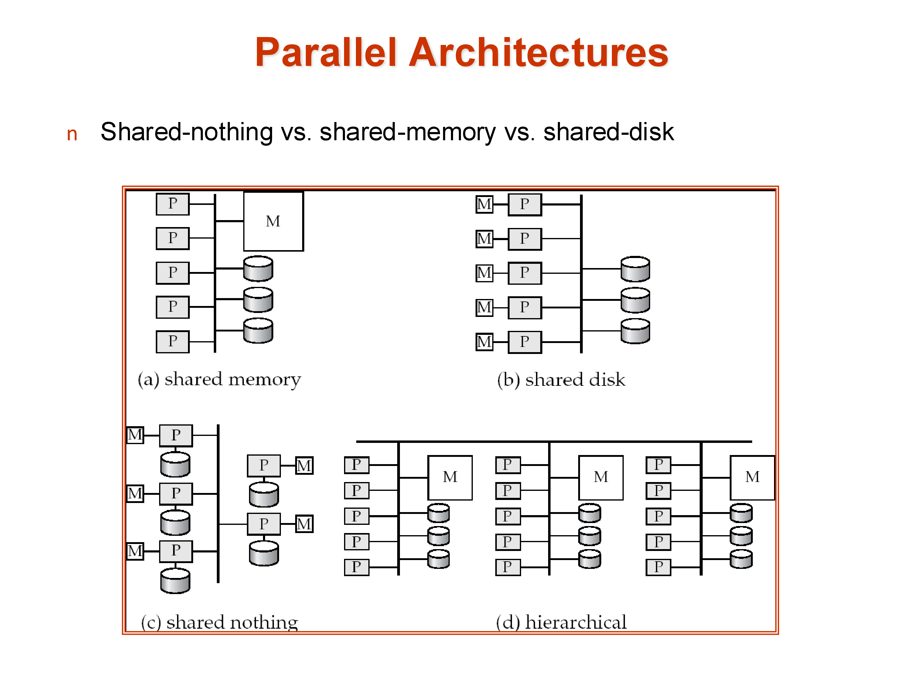
Shared memory: all processors share a single large memory and a single set of disks, connected via a high-speed bus or interconnect. Communication between processors is fast — just a memory write and read. The downside is scalability: the memory bus becomes a bottleneck as more processors are added, and the cost of the interconnect grows rapidly. Shared memory systems typically top out at a few hundred processors. Amazon’s main e-commerce database historically ran on a large shared-memory system because it required extremely low latency, where the performance characteristics of shared memory justified the cost.
Shared disk: each processor has its own private memory but shares a common set of disks (a storage area network, or SAN). This avoids the memory bus bottleneck and allows more processors, but the disk interconnect can become a bottleneck. Consistency — ensuring that different processors don’t have conflicting views of data they’ve both cached from the shared disk — requires careful cache coherency protocols.
Shared nothing: each processor has its own private memory and its own private disk. Processors are connected only via a network (typically commodity Ethernet or InfiniBand). This is the most scalable architecture: hundreds of thousands of machines can be connected in this way, as seen in large cloud data centers. The cost is programming complexity — data that resides on one machine must be explicitly transferred over the network to another machine. There is no implicit sharing. This makes shared-nothing systems hard to build but effectively unlimited in scale.
Hierarchical: the architecture of real data centers. Each individual server is a shared-memory machine with multiple CPU cores sharing a memory bus. Thousands of such servers are connected in a shared-nothing cluster. The hierarchy makes it impossible to describe any real system as purely one model — a “shared-nothing” Spark cluster is actually using shared-memory within each node.
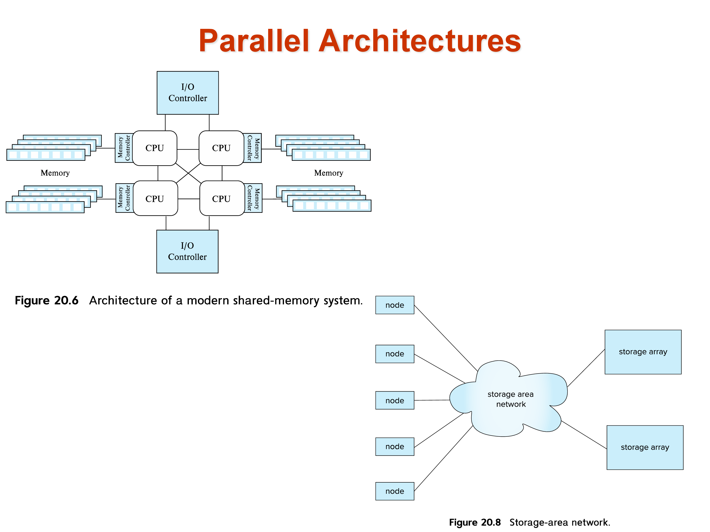
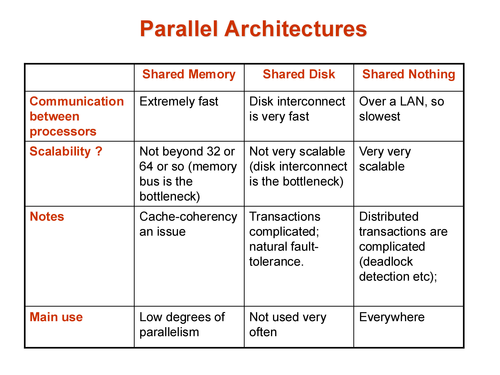
3. Performance Metrics: Throughput and Response Time
In a parallel system, the performance goal is not a single number. Two distinct metrics matter:
Throughput: the number of tasks (queries) completed per unit time. Relevant for workloads with many independent queries running simultaneously — for example, an OLTP system handling thousands of transactions per second.
Response time: the time to complete a single query. Relevant for long-running analytical queries where a single user is waiting for one result.
These metrics can conflict. To maximize throughput, the system might allocate all resources to running many small queries in parallel — this can increase the response time of any individual large query. To minimize response time for a single query, the system might dedicate all resources to that query — reducing throughput.
Modern systems must make deliberate choices about this trade-off depending on the workload. Data warehouses typically optimize for throughput across many analytical queries; real-time dashboards optimize for response time of individual queries.
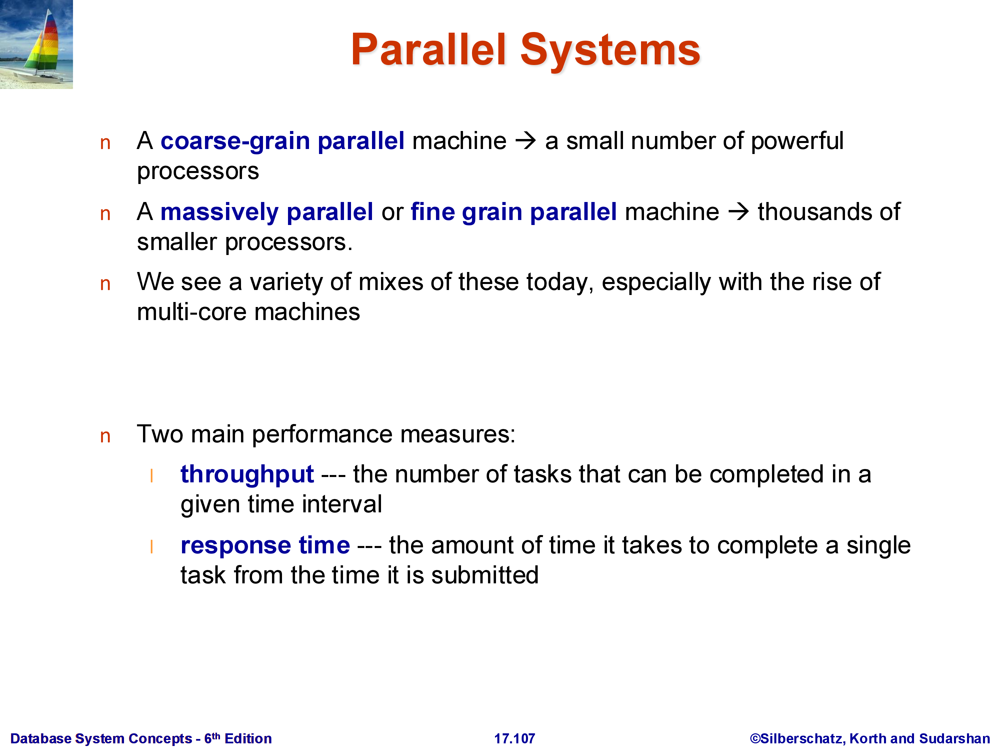
4. Speedup and Scaleup
Two related but distinct ways to measure how well a parallel system uses its resources:
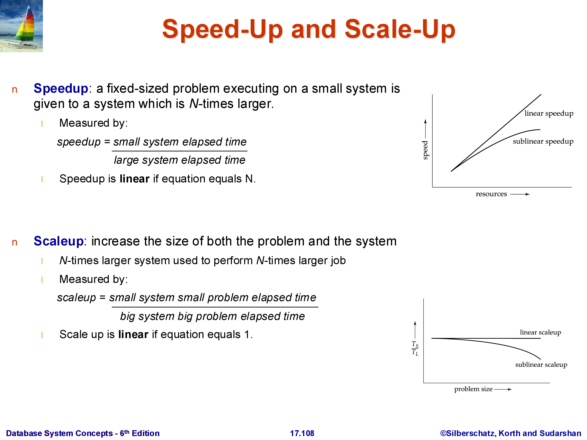
Speedup: fix the problem size (same amount of data, same query) and measure how much faster it runs as the number of machines increases. Ideal linear speedup means doubling the machines halves the run time. In practice, speedup is sublinear.
Scaleup: increase the problem size and the number of machines proportionally, and measure whether the run time stays constant. Ideal linear scaleup means that doubling both the data size and the number of machines keeps the run time the same. Scaleup is often easier to achieve than speedup.
These correspond to strong scaling (speedup) and weak scaling (scaleup) in the parallel computing literature.
4.1 Factors That Limit Speedup
Amdahl’s Law: if a fraction \((1-p)\) of the task is inherently sequential (cannot be parallelized), then no matter how many processors \(N\) you add, the maximum achievable speedup is:
\[\text{Speedup} \leq \frac{1}{(1-p) + p/N} \leq \frac{1}{1-p}\]
For example, if 10% of the task is sequential (\(p = 0.9\)), the maximum possible speedup is \(1/(1-0.9) = 10\times\), regardless of how many machines you add. Amdahl’s Law is also a reminder about where to focus optimization effort: speeding up a component that constitutes only 5% of total runtime can never improve overall performance by more than 5%.
Startup costs: there is a fixed overhead to initialize parallel tasks, distribute data, and coordinate results. This overhead does not diminish as more machines are added.
Interference: processors and machines compete for shared resources — network bandwidth, shared storage, even the scheduler. Adding more machines can actually increase contention.
Skew: work is rarely distributed perfectly evenly. If one machine receives twice the data of others, the overall job time is dominated by that machine, and the effective speedup is cut in half. Skew is a pervasive challenge in parallel data systems, particularly for operations on data with non-uniform value distributions.
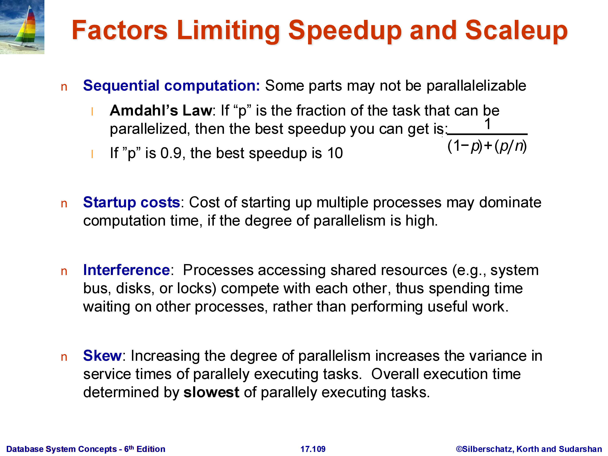
5. Parallel vs Distributed Systems
These terms are sometimes used interchangeably, but the distinction matters for database systems:
Parallel systems: all machines are co-located in the same data center, connected by a high-speed LAN (often InfiniBand or 10–100 GbE). Network latency is low (microseconds to low milliseconds) and bandwidth is high. Parallelism is done for performance.
Distributed systems: machines are spread across geographic locations, connected by wide-area networks. Network latency is much higher (tens to hundreds of milliseconds, bounded by the speed of light) and bandwidth is more constrained. Distribution is done for necessity — fault tolerance, disaster recovery, and low-latency access for users in different locations.
The engineering challenges differ accordingly. Parallel database query processing (the focus of the next section) primarily deals with data movement and coordination within a data center. Distributed transactions (covered separately) must additionally handle network partitions, geographic latency, and consistency across replicas that cannot communicate instantaneously.
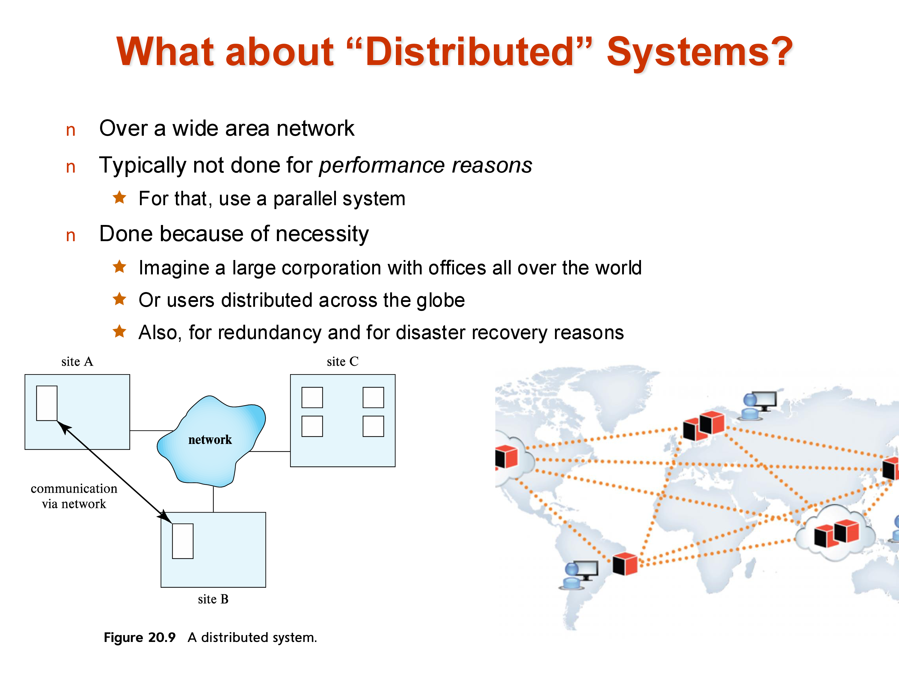
6. Data Partitioning (Sharding)
In a shared-nothing system, a relation cannot live on a single machine — it must be divided across machines. Each piece is called a partition (or a shard — the terms are equivalent). The entire relation \(R\) is the union of its partitions \(R_1, R_2, \ldots, R_k\).
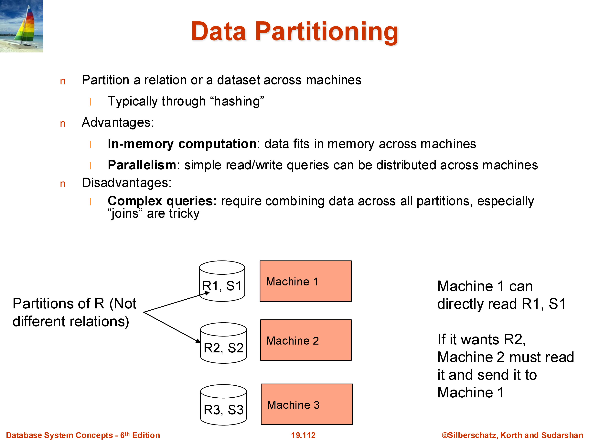
There are two standard partitioning strategies:
Hash partitioning: apply a hash function \(h\) to a chosen attribute (typically the primary key): tuple goes to machine \(h(\text{key}) \bmod k\). This distributes tuples uniformly and is the most common approach. Apache Spark defaults to hash partitioning. The downside: range queries (“find all users with ID between 100 and 200”) will hit every machine, because tuples in that range are distributed across all partitions.
Range partitioning: divide the attribute’s value range into \(k\) intervals and assign each interval to a machine. Range queries on the partition key can be answered by one machine (if the range fits in one partition) or a small subset. The downside: if the data is not uniformly distributed, some ranges may get many more tuples than others — a skew problem. Statistics (histograms) or sampling are used to choose range boundaries that approximately equalize partition sizes.
The choice between hash and range partitioning affects query performance significantly. Systems like Spark use hash partitioning by default but expose range partitioning when applications need it.
7. Data Replication
Modern data systems almost universally replicate data — store multiple copies on different machines. The standard in cloud systems is three-way replication within a data center, plus at least one additional copy in a geographically separate location for disaster recovery.
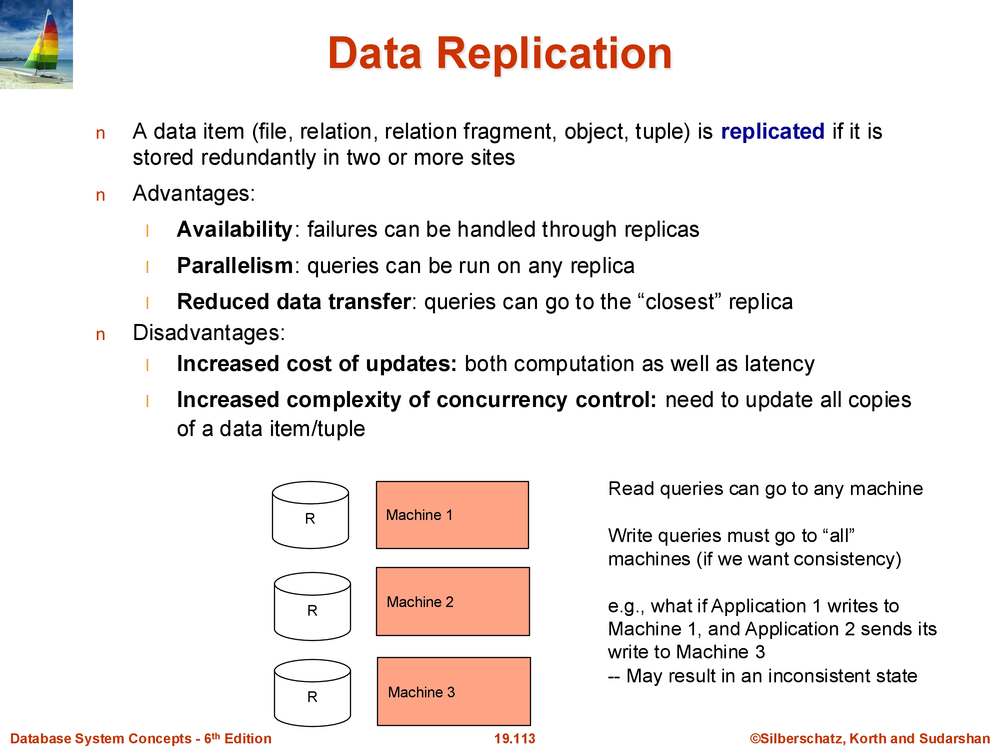
Benefits of replication: - Fault tolerance: if one machine or disk fails, other replicas are available. With a single copy, any disk failure means data loss. - Read parallelism: a read query can be served by any replica. With three replicas, the read throughput is effectively tripled. - Geographic locality: users can be directed to the nearest replica, reducing latency.
Costs of replication: - Write overhead: every write must be applied to all replicas. A write to a single-copy system requires one disk write; a three-copy system requires three. - Consistency: replicas must agree. If update \(A\) is applied before update \(B\) on replica 1 but \(B\) before \(A\) on replica 2, the replicas diverge. This can produce incorrect results. For example, if a user makes their account private and then posts a photo, these two updates must be applied in the same order on all replicas — otherwise some replicas might briefly show the photo before the privacy setting takes effect. - Distributed transactions: ensuring that writes are applied consistently across all replicas under concurrent workloads and possible network failures is the core problem of distributed transactions (covered in a later module).
8. Combined Sharding and Replication
Real systems combine both techniques:
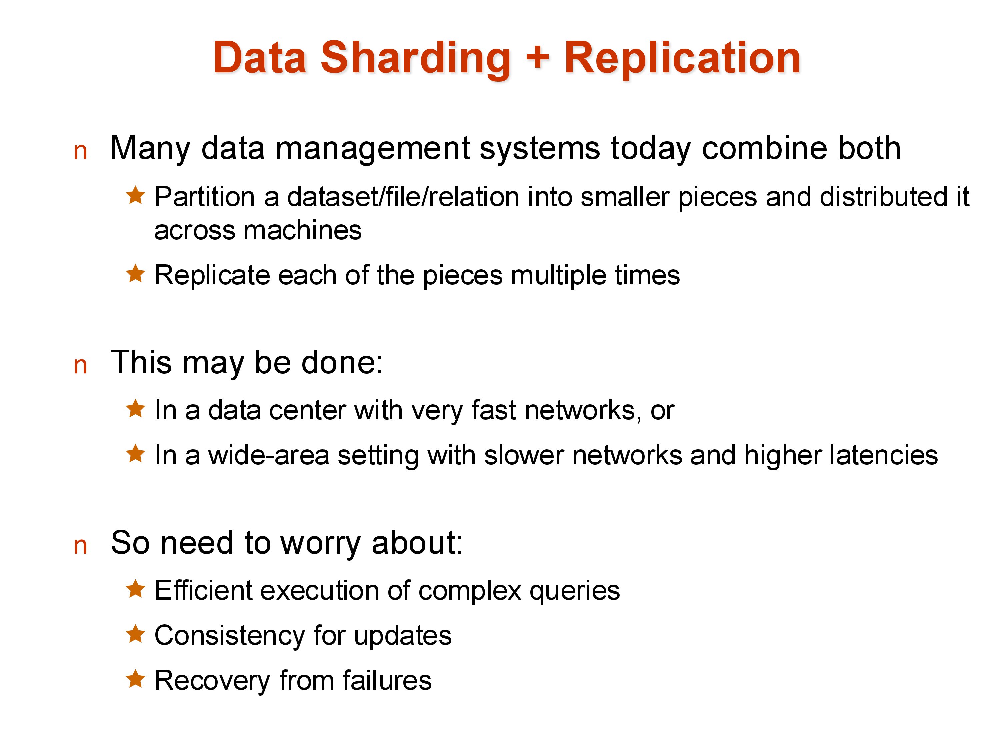
A large relation is first sharded (partitioned) across many machines, and each shard is then replicated (typically three times). This gives both the performance benefits of parallelism (each shard can be processed independently) and the reliability benefits of replication (no shard is a single point of failure).
For example, in a system with 100 machines and 3× replication, each logical shard occupies 3 physical machines. Reads can be served by any of the three replicas; writes must coordinate across all three. Across a wide area, additional replicas in distant data centers provide disaster recovery.
9. Failures
In a single-machine system, failure handling is relatively simple — when the machine fails, operations stop and are restarted when it recovers. In a parallel/distributed system with thousands of machines, failure is not an exception: it is the normal operating condition. A cluster with 10,000 machines and a 1% annual disk failure rate will see a disk fail roughly every 9 hours.
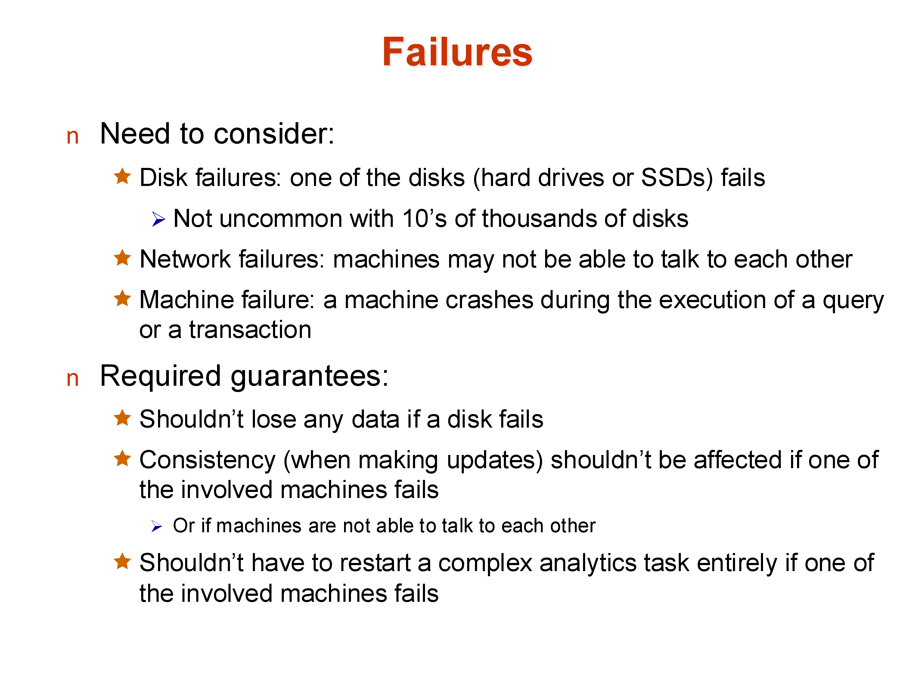
The failure types to handle:
- Disk failures: a disk becomes unreadable. With replication, the data survives; without it, data is lost permanently.
- Network failures/partitions: a machine becomes temporarily unreachable. Updates intended for it cannot be delivered. This creates the dilemma: allow the update to proceed (with the risk that the unreachable machine diverges) or block the update until the machine recovers (reducing availability).
- Machine failures: a machine crashes entirely. Any query currently executing on it is lost.
A common approach to network partitions is quorums: rather than requiring all \(k\) replicas to acknowledge a write, require a majority (e.g., 2 out of 3). A write proceeds as long as at least 2 replicas are available; a read is valid as long as it contacts a majority. This tolerates any single machine failure while maintaining consistency. Quorums are widely used in distributed databases (Cassandra, DynamoDB, MongoDB).
Early parallel databases handled disk failures reasonably well but failed badly at machine crashes during long-running queries — if the machine processing one partition of a large aggregation crashed, the entire query had to restart. Systems like Apache Spark addressed this with fault-tolerant execution: by tracking the lineage of each data partition, Spark can recompute only the lost partition from its input, rather than restarting the entire job.
Distributed transactions — ensuring consistent updates across replicas in the face of failures — will be covered in depth in the Transactions module.
10. Summary
Parallel and distributed data systems are the norm today. The key architectural concepts:
- Shared-nothing is the dominant architecture for large-scale systems: each machine owns its data and communicates explicitly over a network. It scales to hundreds of thousands of machines.
- Speedup and scaleup measure parallelism efficiency. Amdahl’s Law, startup costs, interference, and skew all limit achievable speedup.
- Sharding partitions a relation across machines (hash or range). Hash is uniform but bad for range queries; range supports range queries but is skew-prone.
- Replication stores multiple copies for fault tolerance and read performance, at the cost of write overhead and consistency complexity.
- Failures are routine at scale. Quorum-based writes and fault-tolerant lineage tracking are standard responses.
The next set of notes covers how specific relational operations — sort, join, and aggregation — are executed in a parallel shared-nothing environment.